Cambridge Curriculum
A strong Cambridge-based preschool curriculum that prepares children for kindergarten school in Kampala.
Small Classes • Christian Values • Inclusive Learning • Personalized Attention
Kids Planet Uganda offers a Cambridge-based preschool education with small class sizes, Christian values, and inclusive learning for mainstream learners and children with special learning needs.
Located in Kawempe Lugoba, our preschool, nursery school and daycare centre in Kampala provides a safe, nurturing environment where every child belongs. We combine Cambridge curriculum learning, Christian foundation, and individualized support for all learners.
Your trusted nursery school in Kawempe and daycare centre in Kampala for mainstream learners and children with special learning needs.
Call or WhatsApp 0740941232 for preschool admissions Kampala, baby school Kampala, and daycare enquiries.
Every child belongs. Children learn differently, and every journey matters. Your child is guided with patience, care, and understanding.
Our parents trust Kids Planet Uganda because we blend Cambridge curriculum, Christian values, and inclusive learning in a safe Kawempe environment for every child.
A strong Cambridge-based preschool curriculum that prepares children for kindergarten school in Kampala.
Skilled educators who provide patient, individualized support for all learners.
Inclusive classrooms where mainstream learners and children with special learning needs grow together.
Small groups and personalized attention make our nursery school in Kawempe feel warm and supportive.
A faith-friendly preschool environment rooted in values, compassion, and respect.
A safe daycare centre in Kampala where emotional growth and social development are encouraged every day.
“Every child belongs.”
“Children learn differently, and every journey matters.”
“Your child is guided with patience, care, and understanding.”
Kids Planet Uganda offers a Cambridge-based preschool education with small class sizes, Christian values, and inclusive learning for mainstream learners and children with special learning needs. Located in Kawempe Lugoba, we provide a safe and nurturing environment where every child can learn, grow, and thrive.
As a trusted nursery school in Kampala and daycare centre in Kampala, we welcome families searching for nursery school near me, baby school Kampala, preschool admissions Kampala, and kindergarten school in Kampala.
Schedule a visit today to experience our inclusive classrooms, friendly teachers, and supportive learning community.
Explore why families choose the best nursery school in Kampala for small classes and inclusive care.
Book a VisitOur inclusive preschool classrooms in Kawempe bring together mainstream learners and children with special learning needs in a warm, caring community. Every child receives individualized support and early intervention as part of their learning journey.
At Kids Planet Uganda, inclusive education is part of everything we do. We celebrate each child’s strengths and help families feel supported every step of the way.
Apply for Inclusive AdmissionsRead more about our inclusive preschool, special needs support, and how every child belongs on the Inclusive Learning page.
In Uganda, many parents worry about their children's education because of overcrowded classrooms, unqualified teachers, lack of personalized attention, and schools that neglect moral values. They want the best kindergarten in Uganda, a preschool in Kampala they can trust, and a child-centered kindergarten that feels warm, safe, and inclusive. At Kids Planet Uganda, we offer small class preschool Uganda care, caring teachers Uganda, and a safe kindergarten in Kampala environment where every child is valued. With our Cambridge curriculum, we provide both academic excellence and character development—so parents can trust that their children are not just learning, but truly thriving.
We are committed to inclusive education, welcoming children with learning disabilities or special needs. Our teachers are experienced in supporting children with autism, ADHD, speech and communication challenges, and developmental delays. At Kids Planet Uganda, we provide inclusive kindergarten Uganda care, special needs support for children, and personalized learning for children in a nurturing preschool for social and emotional growth.
Our mission is to build vibrant communities where children are nurtured, inspired by quality education, and supported in uncovering their unique talents. We're here to guide them on a journey of self-discovery, helping them grow into confident, capable individuals ready to take on the world—with a little fun along the way! We believe in the power of inclusive education, and our mission extends to children with learning disabilities or special needs, ensuring they receive the same opportunities, encouragement, and support as every child.
We're on a mission to equip kids with top-notch education and psychological support, helping them sprint toward academic excellence. Think of us as their pit crew—fueling their minds, fixing their doubts, and cheering them on as they race toward success. Because every child deserves to win, and we're here to make sure they cross the finish line with a smile! Our vision is for every child, including those with special learning needs, to feel included, respected, and empowered to achieve their best.
We Are Kids' Planet Kinder and Day Care Center! Our school is a place where children are encouraged to explore, learn, and grow in a safe and nurturing environment. We believe in the potential of every child and are committed to providing the best education and care possible. We offer the Cambridge Curriculum to create a bright future for your child. We look forward to partnering with you on this exciting journey.
We are especially proud of our inclusive teaching philosophy, which ensures children with learning disabilities or special needs are given the attention, patience, and encouragement they deserve. Every child is unique, and we celebrate their differences as strengths.
Warm regards,
Merab Mukisa Namusisi, Principal
At Kids' Planet Kinder and Day Care Center, we nurture young minds with a rich blend of the world-renowned Cambridge curriculum, designed to inspire academic curiosity and personal growth. Rooted in Christian values, our approach fosters a sense of compassion, integrity, and respect for all. We are committed to inclusivity, welcoming children from all faiths and backgrounds, and providing a safe, loving environment where every child is encouraged to thrive. Join us on a journey of learning, exploration, and faith.
Our curriculum includes the Cambridge early years program, making us a leading Cambridge daycare center. We offer an international preschool curriculum that prepares children for a Cambridge-based kindergarten experience. As a British curriculum preschool, we ensure that our students receive the highest quality education.
Our programs are tailored for both typically developing children and children with special learning needs. We use play-based learning, communication exercises, creative arts, and guided interaction to support all learners. Our teachers provide individual attention and inclusive education, helping children develop socially, emotionally, academically, and behaviorally. Early support and encouragement are at the heart of our approach, ensuring every child feels valued and included.
Focus on sensory play, motor skills, and emotional bonding through interactive activities.
Introduction to basic literacy, numeracy, and creative expression through structured play.
Preparation for primary education with foundational reading, writing, math, and social skills development.
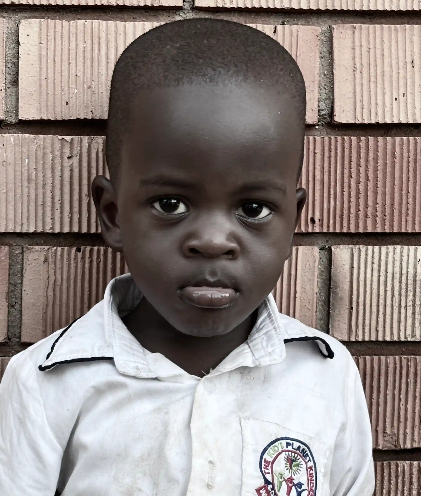
"We teach reverence for God by nurturing faith, guiding children to live with love, humility, and a heart devoted to His teachings. Fear of GOD is the beginning of wisdom."
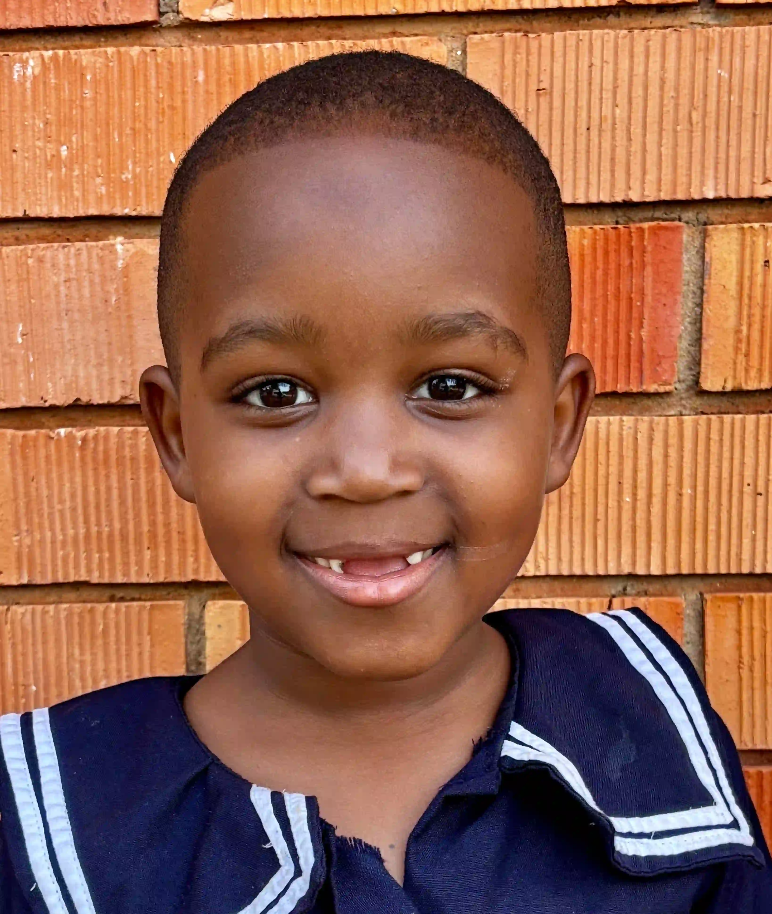
"We teach respect by fostering an environment where every child learns to value differences, listen with kindness, and treat others the way they wish to be treated."
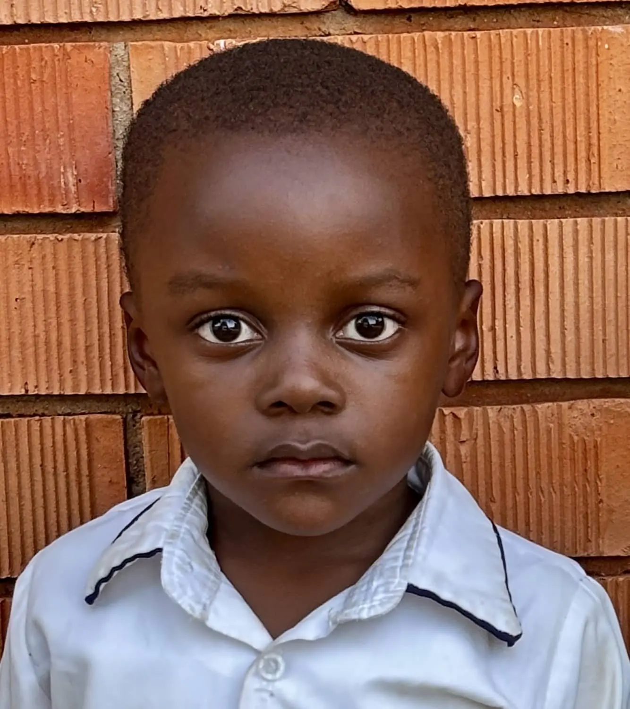
"We teach integrity by creating a culture of honesty, where every child learns to take responsibility for their actions, stand up for what's right, and treat others with fairness and respect."
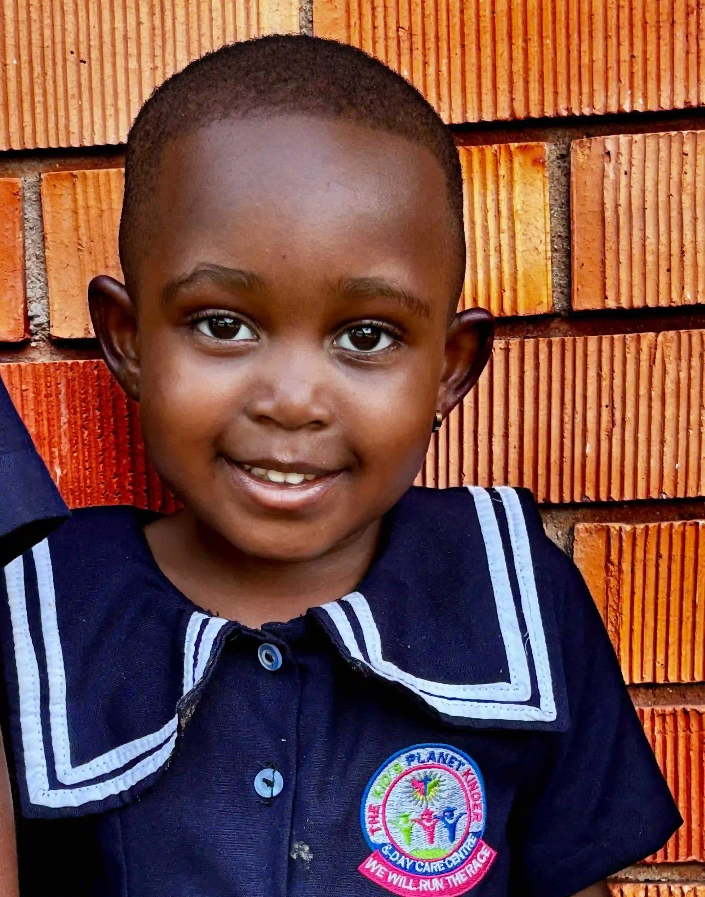
"We teach compassion by encouraging children to understand the feelings of others, lend a helping hand, and spread kindness in both big and small ways every day."
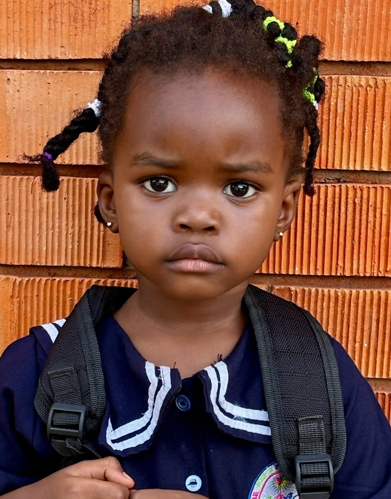
"We teach inclusivity by celebrating diversity, ensuring every child feels seen, valued, and welcomed for who they are, and by fostering a community where everyone belongs."
Discover our warm classrooms, joyful activities, creative arts, and outdoor play through real moments from our school community.
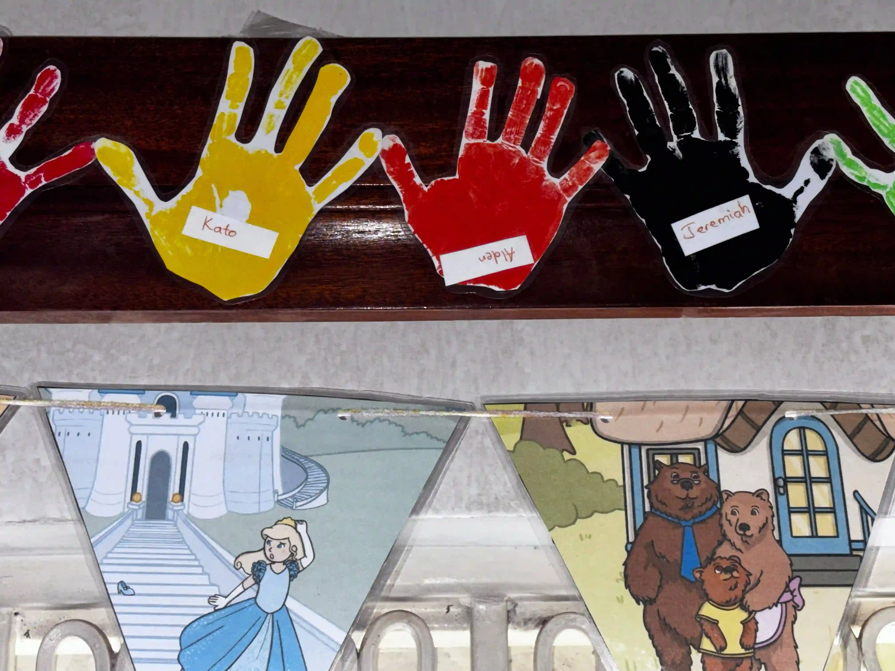
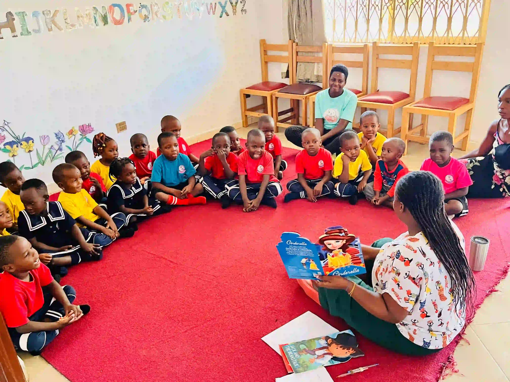
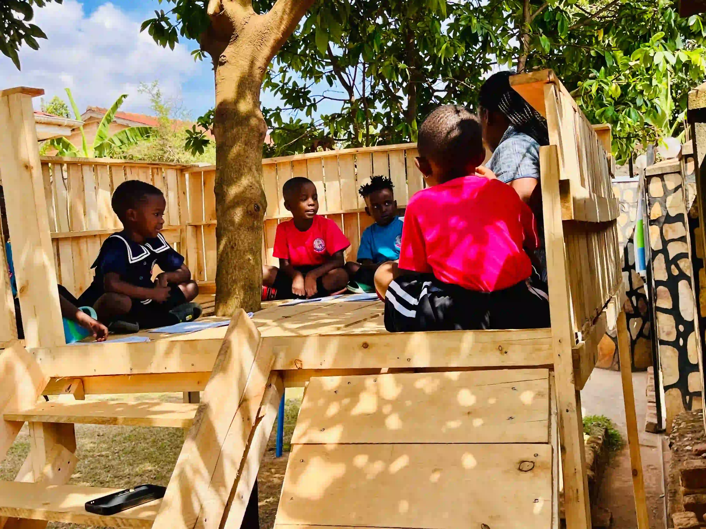
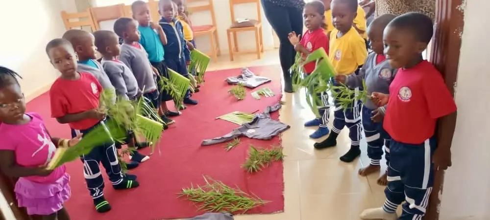
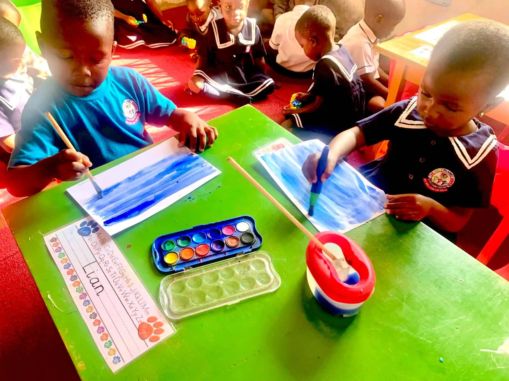
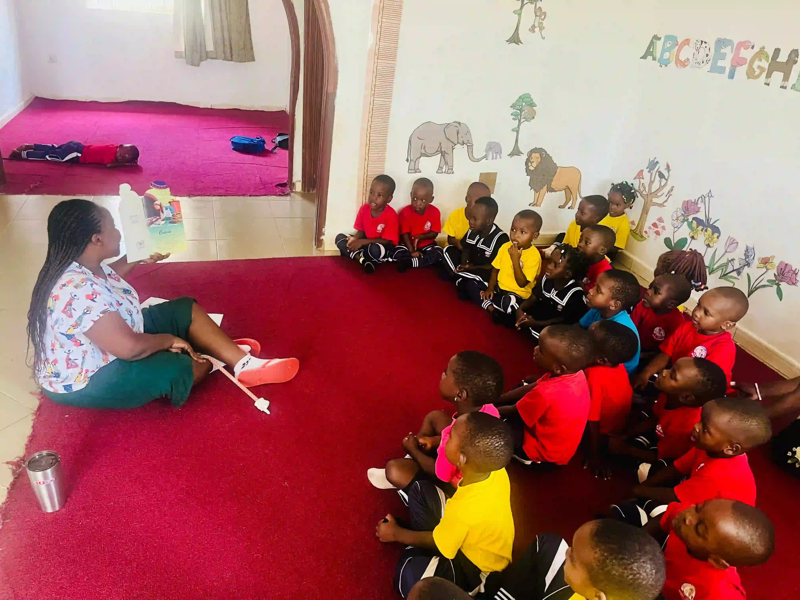
At Kids' Planet, we live for crayon chaos, snack-time negotiations, and the endless questions like why-is-the-sky-blue? teacher? why dont we have tails like cats? Every day with your little one is an adventure, and we wouldn't trade it for anything! Thank you for trusting us to guide, teach, and laugh alongside your child.
At Kids' Planet, we're always out here negotiating snacks like pros and dancing to the same song 27 times straight— it might sound funny but that's how we keep your little stars entertained and learning without even realizing it. They keep us on our toes, and honestly, we love every bit of it. Thanks for letting us be part of their wild, wonderful world!
One minute we're building towers out of blocks, the next we're launching a full-scale investigation into a missing left shoe. There's a glitter explosion in one corner, a masterpiece-in-progress in another, and somehow—between snack swaps and dinosaur debates—your little one is soaking up knowledge like a sponge. It's messy, it's magical, and we wouldn't have it any other way. Thanks for letting us be part of the fun!

Children arrive with smiles and are warmly welcomed by our teachers. They settle in and prepare for an exciting day ahead. Our staff is trained to support both typically developing children and those with learning disabilities or special needs, ensuring every child feels safe and included from the moment they arrive.

Engaging lessons based on the Cambridge curriculum, fostering curiosity and creativity through hands-on activities. We use play-based learning, communication exercises, and creative arts to support all learners, including children with autism, ADHD, speech delays, learning disabilities, and other developmental differences.

Outdoor and indoor play sessions where children develop social skills and enjoy fun activities with friends. Our inclusive environment encourages positive interaction and emotional growth for all children, with extra support for those with learning disabilities or special needs.

Nutritious meals are served, followed by a quiet time for relaxation or napping to recharge for the afternoon. Our staff is attentive to each child's needs, providing a calm and supportive space for both typical children and those with learning disabilities or special needs.
Are you searching for a school that truly understands and welcomes children with special learning needs? At Kids Planet Uganda, supporting children with learning differences is at the heart of what we do. We know every child is unique, and we are dedicated to providing the patient, individualized care and encouragement your child deserves. Our child-centered kindergarten model offers small class preschool Uganda attention, special needs support for children, and a safe, inclusive kindergarten environment for every learner.
“We work closely with parents and guardians to understand every child’s unique needs.”
Contact Us — Book a Private Visit"my kid was at tiny hearts nursury school,he would cry every morning on the way to school so i changed to kids' planet, but now the child is so happy in the morning i believe Our child enjoys the enviroment at kids' planet."
"The curriculum is outstanding and the staff are incredibly supportive. We couldn't be happier."
"Our child loves going to Kids' Planet Kinder every day. he said teacher merry is his best friend ,also when i go to pick him up in evening i find Their activities are engaging and educational."
Your questions are welcome – we’re a trusted part of the Kawempe community.
We are located in Kawempe Lugoba, Uganda.
Yes, we provide safe and reliable transportation services for children within Kawempe and surrounding areas.
We cater for children from age 1 to kindergarten years, providing a nurturing environment for early childhood education.
Our student-to-teacher ratio is 10:1, ensuring personalized attention for each child.
We are open Monday to Friday from 7:30 AM to 6:00 PM. We are closed on weekends and public holidays.
Yes, we offer extended care from 5:00 PM to 6:30 PM for an additional fee.
We offer a variety of activities including arts and crafts, music, dance, and outdoor play to stimulate learning and creativity.
We have secure premises with controlled access, CCTV surveillance, and trained staff in first aid and emergency response.
Our teachers are qualified early childhood educators with certifications in child development and education.
We use a combination of daily reports, parent-teacher meetings, and digital communication platforms to keep parents informed.
Our fees vary depending on the program and age group. Please contact us for a detailed fee structure.
Additional costs may include uniforms, field trips, and
extracurricular activities. These will be communicated in
advance. please feel free to contact us for more
To enroll your child, visit the school for a tour, complete the application form, and submit the required documents.
Currently, we do not offer scholarships, but we have flexible payment plans to support parents.
If your child is unwell, please keep them at home to prevent the spread of illness. We will notify parents immediately if a child falls ill during school hours.
Yes, we provide nutritious meals and snacks throughout the day. We accommodate dietary restrictions and allergies.
WhatsApp: Chat with us on WhatsApp
Our Location: Kawempe Lugoba II